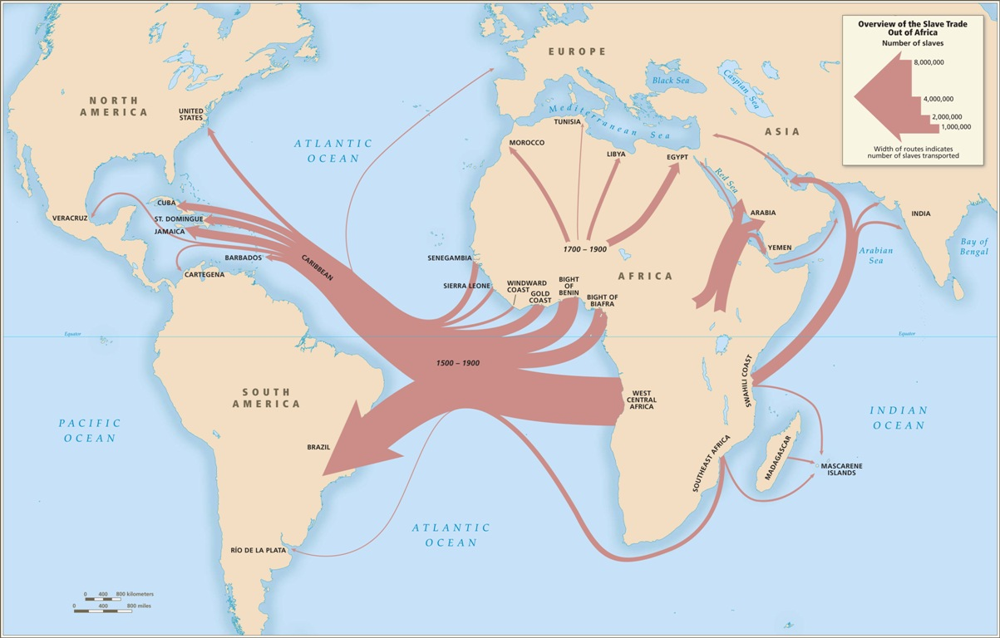

History of Human Trafficking
Human trafficking is not something of contemporary times, although it thrives in our modern world, it has its origins to ancient civilization. For example, the ancient Babylonians ravaged through Israel and took them into slavery during a time period known as the Babyloanian exile (597 BC - 528 BC). These battles between civilizations would lead to the victor forcefully moving people from their homes and into forced labor.

The transatlantic slave trade was truly the first “worldwide” case of human trafficking where millions of Africans were displaced from their homes by the Portuguese at first, and then later Britain, Spain, The Netherlands, France, and The United States. An estimated 12.5 million people became enslaved and about 10.5 million of those slaves went to the Americas. This mass trafficking of Africans went from the 1500s to the 1800s. However, just because the US and Britain would eventually outlaw slavery in the 19th century, doesn’t mean that trafficking would get better, rather it would find new ways to infiltrate our society.
After the period of the Transatlantic slave trade, methods were used such as human smuggling of women and children for forced labor in mines or factories. Heavy industrialization and discoveries such as the gold in California in the 19th and 20th centuries drew many immigrants and citizens from across the country. People were desperate and would basically work for such a little wage that they were nearly slaves. Their labor was extreme and their wages were low. Not only this, but some women would be forced to become prostitutes and subject to abuse by men. The use of deceit or drugs would often entrap women and force them into prostitution. As more technological advances happen across the world coming into the 21st century, as well as the rise of organized crime, the fight against human trafficking would be much more difficult than ever.